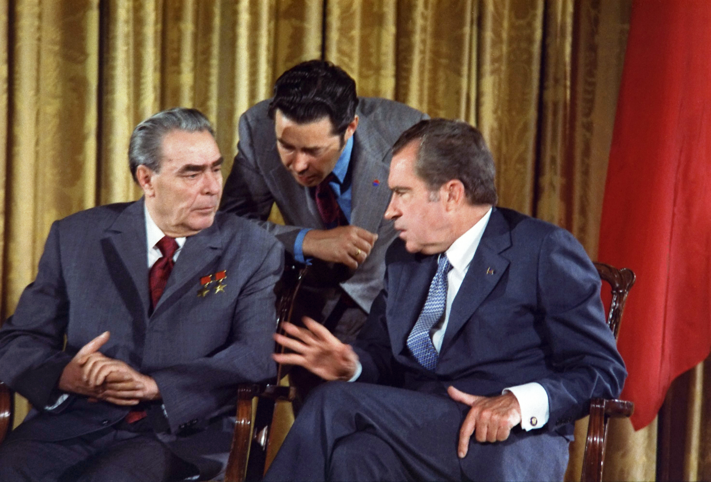

A Series of Missed Opportunities? Taking a Closer Look at Détente during the Cold War.
It can be said that the years 1969-1980 was a period when the Cold War was ‘most hot’, with conflicts taking place throughout the Middle East, Latin America and Africa. However, it was also the period which saw the greatest opportunity for peace to be reached. The USA and USSR realised that the nuclear arms race were becoming increasingly costly, and straining the economy of both superpowers. This gave arise to the opening of talks, and the agreements reached at SALT I (1972) and the Helsinki Accords (1975) are clear examples of were both superpowers sought to utilise areas of mutual interest where cooperation were reached. However, to deem the period ‘a series of missed opportunities’ would imply that both the USSR and USA’s aims were specifically to reach peace, and this would be incorrect. Détente came to an end after the conflicts in Afghanistan and Iran in 1979, and the ratification of the SALT II Treaty. Therefore, to describe détente as a ‘missed opportunity’ would be inaccurate due to the continuation of disagreements, secrecy and conflict in ‘Third World’ proxy wars. These wars amongst ‘smaller countries’ had always been present from the start of the Cold War, intensified during détente, and continued after détente. To describe this period as a ‘series of missed opportunities’ would be invalid as both the USA and USSR had alternative aims and perspectives towards détente – perspectives that would have never solved the intense disagreements of the Cold War.
The obvious argument in favour of the proposition would be to suggest that there were many clear-cut opportunities for cooperation that arose during détente, but were left incomplete. The Cuban Missile Crisis (1962) demonstrated that an alternative to brinkmanship was required with the world on the brink of thermonuclear war. The issue of Arms Control – ‘nuclear non-proliferation – and communication between the USA and USSR also came to the forefront as a result. The creation of the ‘hot-line’ (June 1963), Moscow Test Ban Treaty (August 1963), Nuclear Non-Proliferation Treaty (July 1968) and the increase in US-Soviet trade, were all clear instances of the recognition to limit nuclear weapons, increased communication and a move towards coexistence. SALT I marked the high point in co-operation, with Nixon visiting Moscow in 1972 and 1974, and Brezhnev visiting Washington in 1973. A less hostile rhetoric between Moscow and Washington was upheld, and the docking of Soyuz and Apollo spacecraft (July 1975) symbolised this. Willy Brandt’s proposal of Ostpolitik (looking to stabilise tensions between the East and West Germany) also marked an opportunity for détente as it encouraged the easing of tension across Europe, with the French pushed to seek dialogue with countries like Romania. One of the most key prominent opportunities in cooperation was the Helsinki Accords (1972-75) and led to agreements on security in Europe, cooperation on economics and technology and humanitarian agreements. 35 nations, from both sides of the Iron Curtain, signed the treaty. The Accords also had the objective of increasing the flow of information and even personal contacts across the East-West divide. These developments are illustrative of the fact that both the USA and USSR were seeking an easing of tensions. However, they can only be perceived as laying the framework for coexistence, as the end goal of cooperation was never fulfilled.
Although the argument in favour of the proposition holds credibility, it can just as easily be argued that the 1969-80 period was not a ‘series of missed opportunities’. This can be evidenced as détente never gave a clear opportunity to achieve peace, despite the numerous talks held, and this was due to the continuation of conflict through the ‘Third World’. Historian Odd Arne Westad stated that the ‘Cold War was a continuation of colonialism through slightly different means. Superpower interventions… helped put a number of Third World countries in a state of semi-permanent civil war... against the peasantry.’ Therefore, the agreements could be perceived as the superpowers ‘fronting’ to the world, with their real aims being far more complicated. Brezhnev saw détente as an opportunity to gain access to foreign aid, and open its borders to international trade. Nixon and Kissinger’s aims, as much as they were to limit the arms race, they also sought to utilise all available anti-Soviet opportunities through the Middle East, Latin American and Africa. The US were also open to China in order to alter the geometry of global politics to the advantage of the US, and pressurise the USSR. Opportunism characterised the USA’s involvement in the Third World countries, contradicting the statement that détente was ‘a series of missed opportunities’ for the USA. The interventions in Egypt, Chile and Angola were the main examples of this. It can be argued that Nixon and Kissinger failed to contain the influence of the Soviets in the Third World, as by the end of the 1970s, Mozambique, Angola and Afghanistan were all under Soviet control. The Soviets were at their highest point in expanding influence across the world. Although the SALT treaty and Helsinki Accords were central to the achievements of détente, they were flawed by limitations, criticisms and disagreements. SALT had no legal basis and was given different weighing by the USA and USSR, with US Congress were greatly concerned by the toleration of asymmetries (allowed the USSR to enjoy superiority in some categories of strategic weaponry).
The USSR flagrantly ignored the issues of human rights, despite signing the Helsinki agreement, which the USA used to pressurise the USSR into cooperating over détente. John Lewis Gaddis stated ‘[instead, the Helsinki Accords] gradually became a manifesto of dissident and liberal movement…’ Foreign Minister Andrei Gromykc assured Brezhnev that the agreements were ‘just a piece of paper’, and President Ford stated the agreement was ‘a time bomb’ for the Soviets. For this reason, it can be argued that the Helsinki Accords may not have been perceived by either superpower as a genuine attempt at cooperation and coexistence, despite the numerous signatories. President Carter spent 3 years working in vein to further the cause of world peace, and to bring an end to the Cold War, but by the end of his term, the Soviet Union arsenal equalled that of the US, and the America’s world supremacy was being openly challenged. Despite Carter’s greater ambition for SALT, Brezhnev rejected his proposals to ‘deep cuts’ to nuclear weapons and ban new forms of weaponry. Although SALT II did reach an agreement in June 1979, but was compromised and enmeshed in wider East-West disagreements, with the USA using human rights violation and their relationship with China to pressurise the Soviets. The Soviet invasion of Afghanistan and the fall of the Shah in Iran signalled the end of détente, and underlines the lack of search for cooperation and coexistence in the Third World, which undermined the cooperation between the superpowers, reinstating the point that the 1969-80 period was not a series of missed opportunities.
The 1970s witnessed regular summit meetings between leaders of superpowers – 1972 (the first summit since 1961), 1973, 1974 (twice) and 1979 – and this gave rise to a new hope of cooperation. Achievements came out from this meetings as the superpowers were prepared to accept the compromises necessary to secure agreements on issues of mutual concern e.g. proliferation of nuclear weapons and a rapid increase in defence budgets. However, the period came to an abrupt end when conflict between the two superpowers resumed in 1980, and this may lead to the belief that these meetings were ‘missed opportunities’ that could have led to peace. But this would be inaccurate, as Third World proxy wars and ulterior motives amongst the world leaders throughout the period undermined these so called ‘opportunities’. Détente had taken the sting off of the Cold War, but it had never been the solution to the deep-seated hostilities that caused it.